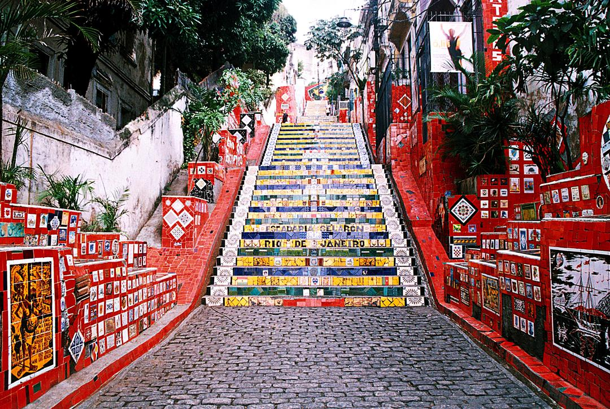
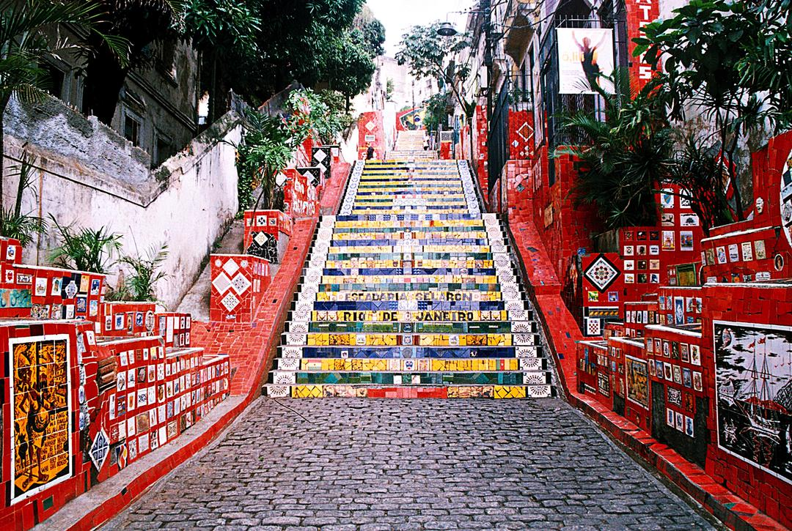
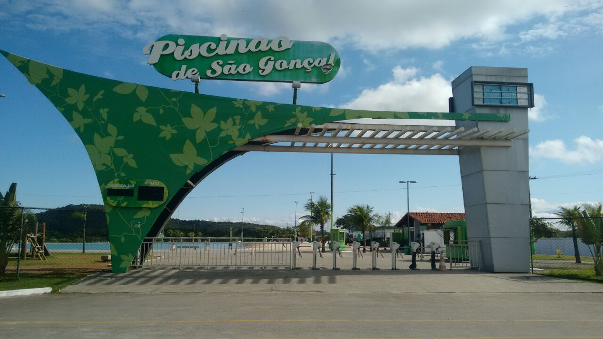
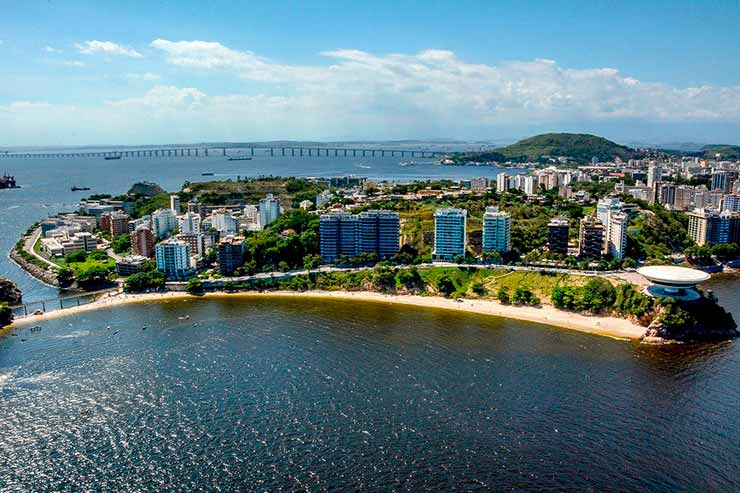

1. Rio de Janeiro
Rio de Janeiro é a segunda maior cidade do Brasil, famosa por seu turismo e importância no setor de petróleo e gás.
População: ~6,7 milhões
 

2. São Gonçalo
São Gonçalo é uma cidade com grande crescimento populacional, próxima à capital.
População: ~1,1 milhão
3. Duque de Caxias
Duque de Caxias é um importante polo industrial e logístico, com presença forte no setor de petróleo.
População: ~930 mil

4. Nova Iguaçu
Conhecida por sua forte presença na indústria automobilística.
População: ~850 mil
5. Niterói
Também parte do ABC Paulista, com destaque para a indústria e comércio.
População: ~723 mil
